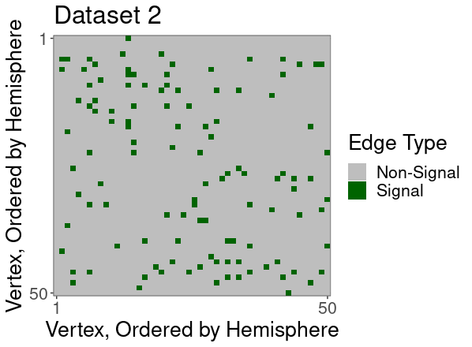
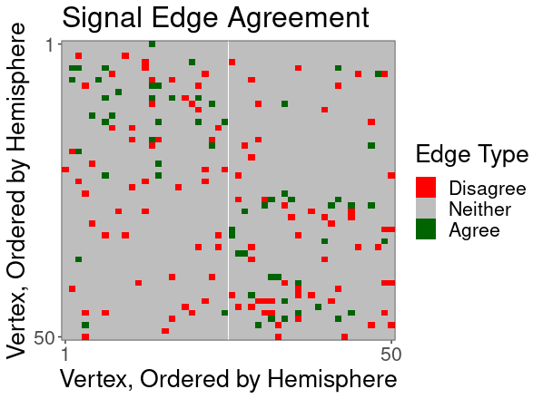
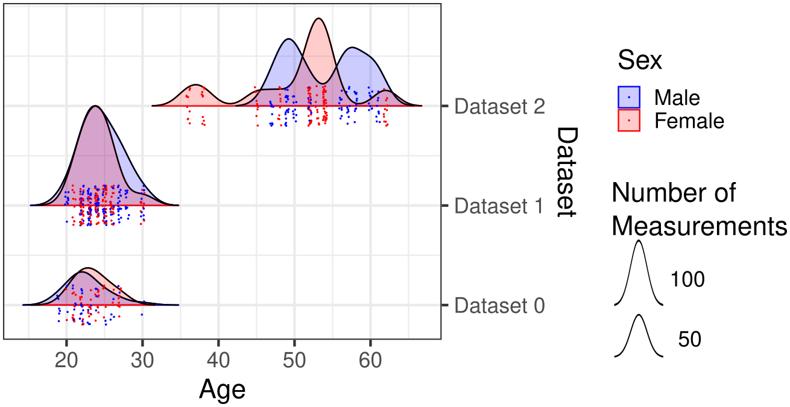
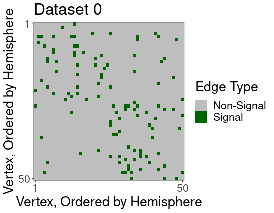
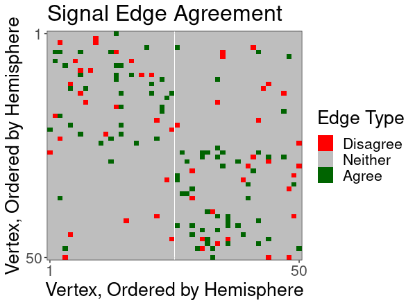
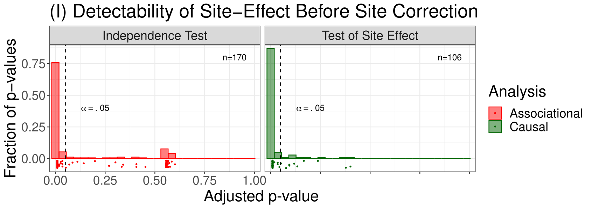
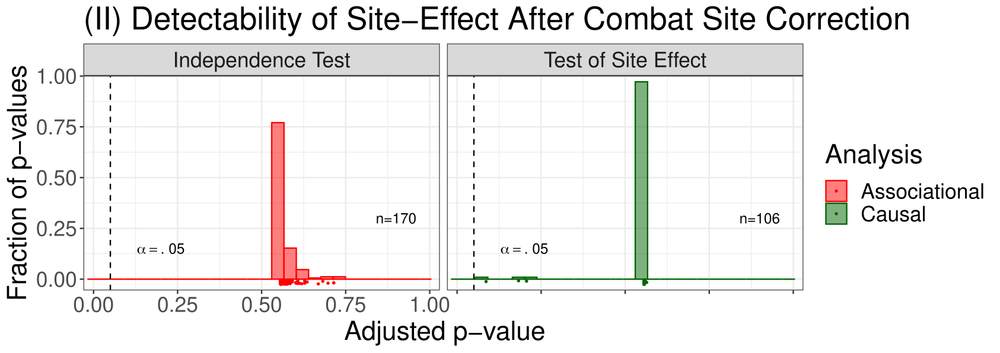

<!-- TODO add slide numbers & maybe slide name --> ## Batch Effects are Causal Effects Eric Bridgeford | PhD Student, Dept. Biostatistics, JHU ericwb.me --- ## What does a batch effect look like? - Example - Data: $N$ participants, measure functional connectivity (FC) - Goal: want to uncover whether there is a difference between males and females --- ## Batch Effect Example <img src="images/causal_fmri/dataset1.png" style="height: 250px"/> --- ## Batch Effect Example <center><img src="images/causal_fmri/dataset1.png" style="height: 250px"/> </center> --- ## Batch Effect Example <center><img src="images/causal_fmri/dataset1.png" style="height: 250px"/> </center> <center></center> --- ## What happened? - Datasets 1 and 2 differ in covariate distribution  --- ## Batch Effect Example -- Try 2 <newline> </newline> <center><img src="images/causal_fmri/dataset1.png" style="height: 250px"/> </center> <center></center> --- ## Procedure - subset of CoRR Dataset - $N>1,700$ individuals imaged across $24$ different datasets - Estimate FC for all individuals with AAL parcellation - all datasets have associated covariates (sex, age, continent) - for all pairs of datasets $d_1, d_2$: - Compute association of dataset with FC; - Estimate causal effect of dataset with FC if such a comparison is possible; - key aspect: comparison is, quite often, .ye[impossible] --- ### Adjustment for Covariate Distribution Still yields Batch Effects - $\frac{24\cdot23}{2} = 276$ possible Comparisons - $170$ pairs differ in covariate distribution - $106$ pairs have similar covariate distribution <newline> </newline> <newline> </newline> <center></center> --- ### Batch Effects and Independence Effects can be Eliminated through ComBat <center></center> --- ### ComBat preserves between-individual Signal - are we preserving signal that .ye[should] be present between individuals? - Problem: site correction could "wash out" inter-individual comparisons | Signal | $\%$ Raw Data | $\%$ After ComBat | | :--- | :--- | :--- | | Sex$^\dagger$ | $\frac{19}{22}$ | $\frac{18}{22}$ | Age | $\frac{18}{24}$ | $\frac{19}{24}$ <newline> </newline> <newline> </newline> $^\dagger$: two datasets were single-sex, so a sex effect could not be estimated within-dataset --- ### ComBat does not disrupt within-individual signal - are we preserving basic properties of the connectome? <center><img src="images/causal_fmri/signal.png" style="height: 250px"/></center> --- # Summary - provide a precise description of batch effects as a causal inference problem - propose a method for estimating batch effects - show the batch effect can be removed - show batch effect removal via ComBat preserves inter-individual and intra-individual signal --- # Acknowledgements - Key Contributors: Joshua T. Vogelstein, Brian Caffo, Mike Powell, Noam Finkelstein, Anton Alyakin, Consortium for Reliability and Reproducibility